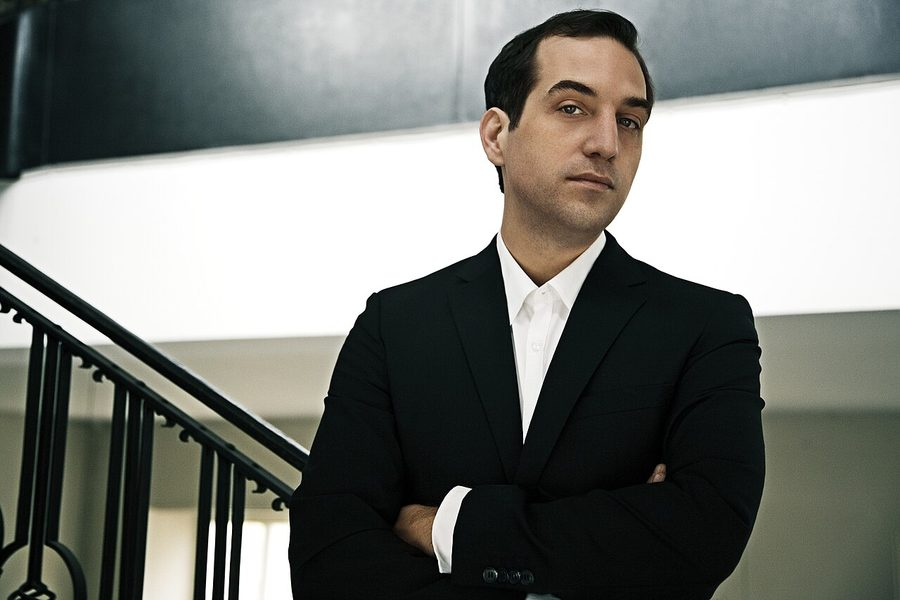

Marc Houle reveals new synth-pop live act



Canadian-born Marc Houle has a history in techno that stretches back to the late 90s, closely aligned with the Richie Hawtin led Minus stable during the ‘minimal’ reign of the clubs, though he’s steered down a more eclectic path the past few years. This continues with the launch of his new La Folie live project, which will be unveiled in a live showcase in Berlin next month.
Synth-pop is the order of the day for the new project, which has seen Houle linking with previous collaborator Joaquim dos Santos. Houle had already hinted at a move away from straight-up techno, towards electro with a pop edge on his 2012 album Undercover, and as the act’s debut video Her New Dress reveals, Houle has taken things even further down the synth-pop path.
The band’s live show is set for a live unveiling at Berlin’s Berghain on June 9, and the La Folie live show has been described as “pop music juxtaposition, made for uneasy easy listening”, blending classic synth-pop sonic archetypes with Houle’s darker techno stylings.
The genesis for the act goes back 10 years, when Houle and dos Santos met when they were still living in Canada and began recording together. Years later the pair met again after having both relocated to Berlin, where they recommenced work in Houle’s studio on the earlier musical sketches they’d created together. Clelia Cantoro then joined as the final element of their live act.
While La Folie have yet to reveal the album’s name, tracklisting or release date, they’ve unveiled an album preview that can be streamed now…